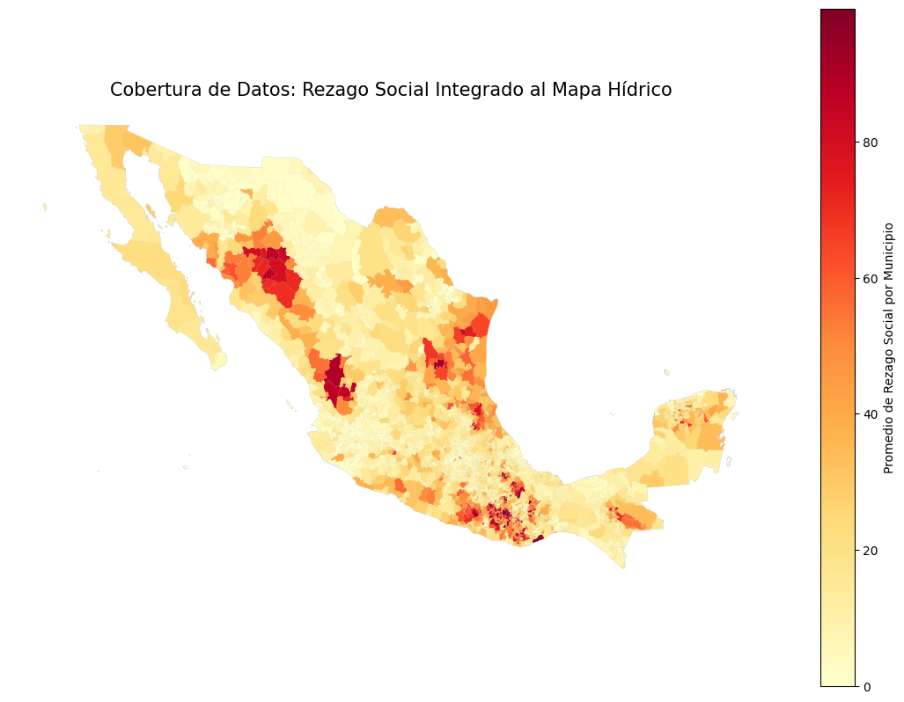
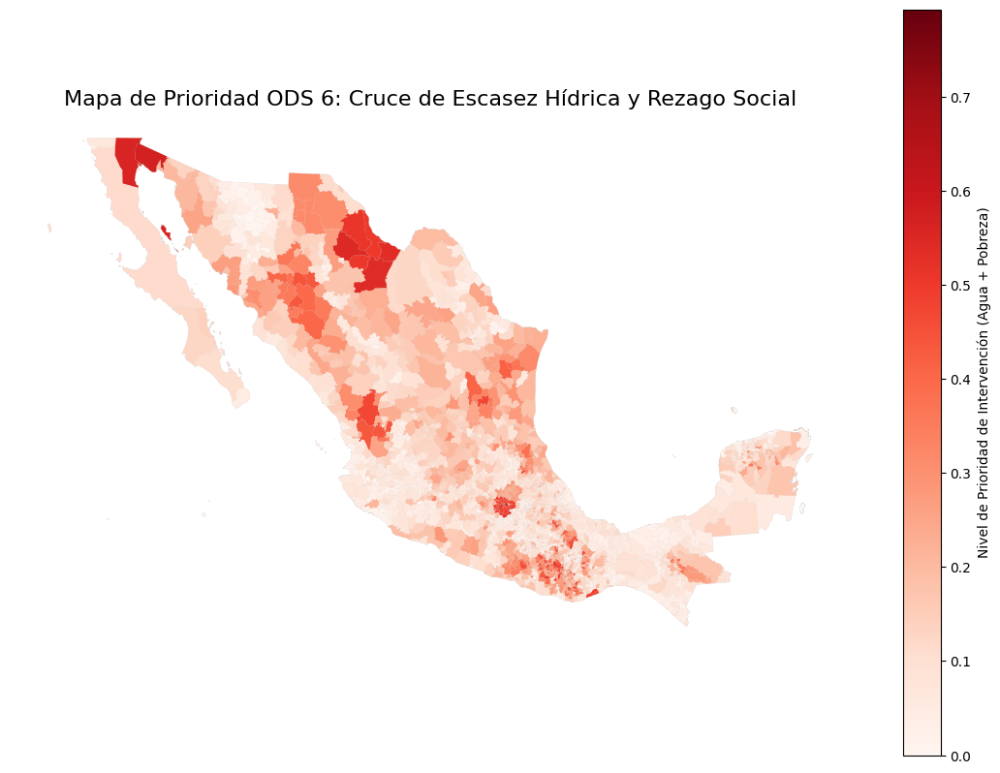
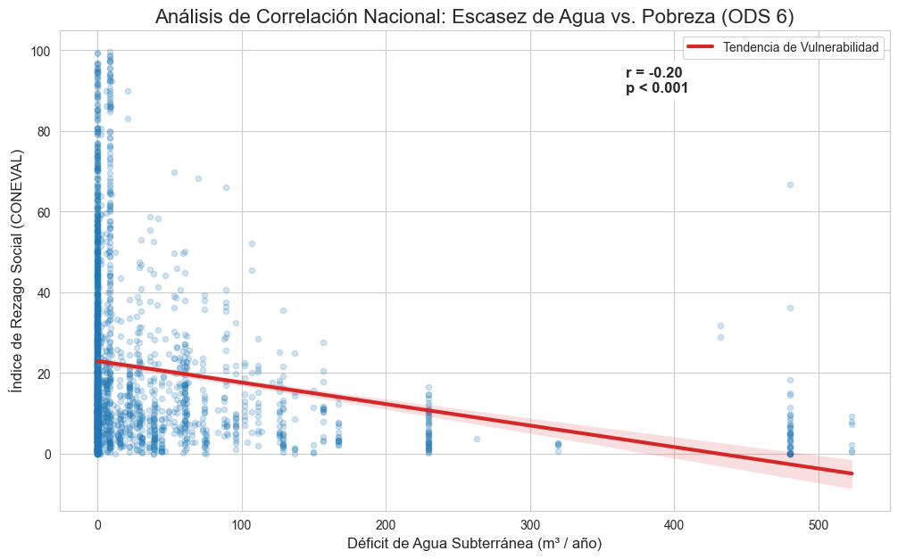

import pandas as pd
import geopandas as gpd
import matplotlib.pyplot as plt
import seaborn as sns
import scipy.stats as stats
import os# Configuración de rutas (Ajusta según tu estructura)
BASE_DIR = os.path.abspath(os.path.join(os.getcwd(), ".."))
DATA_DIR = os.path.join(BASE_DIR, "data")
GEOFILES_DIR = os.path.join(DATA_DIR, "geofiles")
REZAGO_DIR = os.path.join(DATA_DIR, "rezago_social")
# Rutas específicas
ruta_municipios = os.path.join(GEOFILES_DIR, "nacional", "MUNICIPIOS.shp")
ruta_disponibilidad = os.path.join(GEOFILES_DIR, "disponibilidad_de_agua_subterranea_09-11-2023.shp")
ruta_rezago = os.path.join(REZAGO_DIR, "IRS_localidades_2020.xlsx")# Cargar mapas
gdf_mun = gpd.read_file(ruta_municipios)
gdf_disp = gpd.read_file(ruta_disponibilidad)
# Crear clave de 5 dígitos (CVE_ENT + CVE_MUN) para el mapa de municipios
# zfill(x) asegura que siempre tenga ceros a la izquierda (ej: '9' -> '09')
gdf_mun['cve_geo_mun'] = gdf_mun['CVE_ENT'].astype(str).str.zfill(2) + \
gdf_mun['CVE_MUN'].astype(str).str.zfill(3)
print(f"Mapas cargados. Total de municipios en mapa: {len(gdf_mun)}")Mapas cargados. Total de municipios en mapa: 2456hojas = ['Localidades AGS-MICH', 'Localidades MOR-ZAC']
lista_df = []
print("Iniciando lectura de datos de CONEVAL...")
for hoja in hojas:
print(f"-> Procesando hoja: {hoja}...")
# Leemos sin encabezado para detectar las posiciones reales (header=None)
df_temp = pd.read_excel(ruta_rezago, sheet_name=hoja, header=None)
# Según tu captura de Excel:
# Columna B es 'Clave localidad' -> Índice 1
# Columna D es 'Municipio' -> Índice 3
# Columna O es 'Índice de rezago' -> Índice 14 (o la 15ava columna)
# 1. Seleccionamos las columnas por número de posición
df_temp = df_temp[[1, 3, 14]]
# 2. Renombramos para trabajar fácil
df_temp.columns = ['cve_loc', 'mun_name', 'rezago']
# 3. Limpiamos: Nos quedamos solo con las filas donde la clave sea un número real
# Esto elimina automáticamente los títulos, logos y filas vacías (filas 0 a 7)
df_temp = df_temp[pd.to_numeric(df_temp['cve_loc'], errors='coerce').notnull()].copy()
lista_df.append(df_temp)
# Unir las pestañas
df_rezago_raw = pd.concat(lista_df, ignore_index=True)
# 4. Limpieza de Clave: Asegurar 9 dígitos y extraer los primeros 5 para el Municipio
df_rezago_raw['cve_loc_str'] = df_rezago_raw['cve_loc'].astype(float).astype(int).astype(str).str.zfill(9)
df_rezago_raw['cve_geo_mun'] = df_rezago_raw['cve_loc_str'].str[:5]
# 5. Asegurar que el rezago sea número
df_rezago_raw['rezago'] = pd.to_numeric(df_rezago_raw['rezago'], errors='coerce')
# 6. Agrupar por municipio (Promedio municipal)
df_rezago_final = df_rezago_raw.groupby('cve_geo_mun').agg({
'mun_name': 'first',
'rezago': 'mean'
}).reset_index()
# Renombrar columna para que la Celda 5 la encuentre igual que antes
df_rezago_final = df_rezago_final.rename(columns={'rezago': 'Índice de rezago social'})
print(f"¡Proceso completado! Municipios encontrados: {len(df_rezago_final)}")
display(df_rezago_final.head())Iniciando lectura de datos de CONEVAL...
-> Procesando hoja: Localidades AGS-MICH...
-> Procesando hoja: Localidades MOR-ZAC...
¡Proceso completado! Municipios encontrados: 2469| cve_geo_mun | mun_name | Índice de rezago social | |
|---|---|---|---|
| 0 | 01001 | Aguascalientes | 7.994488 |
| 1 | 01002 | Asientos | 9.956953 |
| 2 | 01003 | Calvillo | 4.846338 |
| 3 | 01004 | Cosío | 3.976508 |
| 4 | 01005 | Jesús María | 5.046263 |
# 1. Igualar sistemas de coordenadas
gdf_disp = gdf_disp.to_crs(gdf_mun.crs)
# 2. Cruce espacial para asignar datos de acuíferos a cada municipio
# Un municipio puede estar sobre varios acuíferos; tomamos el peor escenario de déficit
gdf_unido_hidrico = gpd.sjoin(gdf_mun, gdf_disp, how="left", predicate="intersects")
# 3. Agrupar para que no haya repetidos por municipio, tomando el valor mínimo de DMA_NEGATI
df_hidrico_final = gdf_unido_hidrico.groupby('cve_geo_mun').agg({
'NOM_MUN': 'first',
'DMA_NEGATI': 'min', # El déficit más alto
'RECARGA_TO': 'mean',
'geometry': 'first'
}).reset_index()
# Convertir de nuevo a GeoDataFrame
gdf_hidrico_final = gpd.GeoDataFrame(df_hidrico_final, geometry='geometry', crs=gdf_mun.crs)
print("Cruce hídrico completado.")Cruce hídrico completado.print("Realizando unión con el mapa hídrico...")
# Unión final por clave numérica de 5 dígitos
final_vulnerabilidad = pd.merge(
gdf_hidrico_final,
df_rezago_final[['cve_geo_mun', 'Índice de rezago social']],
on='cve_geo_mun',
how='inner'
)
if final_vulnerabilidad.empty:
print("ADVERTENCIA: La unión sigue vacía.")
# Diagnóstico rápido de claves
print(f"Clave Mapa (ej): {gdf_hidrico_final['cve_geo_mun'].iloc[0]}")
print(f"Clave Excel (ej): {df_rezago_final['cve_geo_mun'].iloc[0]}")
else:
print(f"Unión exitosa. Municipios en el mapa: {len(final_vulnerabilidad)}")
# Visualización
fig, ax = plt.subplots(figsize=(14, 10))
# Dibujamos todo México de fondo
gdf_mun.plot(ax=ax, color='#f2f2f2', edgecolor='#d1d1d1', linewidth=0.5)
# Dibujamos los datos (coloreando por rezago social)
final_vulnerabilidad.plot(
ax=ax,
column='Índice de rezago social',
cmap='YlOrRd',
legend=True,
legend_kwds={'label': "Promedio de Rezago Social por Municipio"}
)
plt.title("Cobertura de Datos: Rezago Social Integrado al Mapa Hídrico", fontsize=15)
plt.axis('off')
plt.show()Realizando unión con el mapa hídrico...
Unión exitosa. Municipios en el mapa: 2456
# 1. Normalizar las variables para que estén en la misma escala (0 a 1)
# Para el déficit, invertimos la escala: más negativo = más vulnerabilidad
final_vulnerabilidad['norm_deficit'] = (final_vulnerabilidad['DMA_NEGATI'] - final_vulnerabilidad['DMA_NEGATI'].max()) / \
(final_vulnerabilidad['DMA_NEGATI'].min() - final_vulnerabilidad['DMA_NEGATI'].max())
final_vulnerabilidad['norm_rezago'] = (final_vulnerabilidad['Índice de rezago social'] - final_vulnerabilidad['Índice de rezago social'].min()) / \
(final_vulnerabilidad['Índice de rezago social'].max() - final_vulnerabilidad['Índice de rezago social'].min())
# 2. Crear el Índice de Vulnerabilidad Combinada (50% agua, 50% social)
final_vulnerabilidad['prioridad_ods6'] = (final_vulnerabilidad['norm_deficit'] + final_vulnerabilidad['norm_rezago']) / 2
print("Índice de prioridad calculado.")
display(final_vulnerabilidad[['NOM_MUN', 'DMA_NEGATI', 'Índice de rezago social', 'prioridad_ods6']].sort_values(by='prioridad_ods6', ascending=False).head(10))Índice de prioridad calculado.| NOM_MUN | DMA_NEGATI | Índice de rezago social | prioridad_ods6 | |
|---|---|---|---|---|
| 713 | Nezahualcóyotl | -480.429914 | 66.677643 | 0.793686 |
| 273 | Álvaro Obregón | -480.429914 | 36.127318 | 0.640347 |
| 1942 | San Luis Río Colorado | -432.044272 | 31.818561 | 0.572492 |
| 12 | Mexicali | -432.044272 | 28.945835 | 0.558073 |
| 675 | Coacalco de Berriozábal | -480.429914 | 18.341147 | 0.551075 |
| 199 | Aldama | -523.325232 | 9.234475 | 0.546350 |
| 208 | Camargo | -523.325232 | 7.926900 | 0.539787 |
| 239 | Manuel Benavides | -523.325232 | 7.193516 | 0.536106 |
| 759 | Tlalnepantla de Baz | -480.429914 | 15.043017 | 0.534521 |
| 705 | Juchitepec | -480.429914 | 14.552909 | 0.532061 |
fig, ax = plt.subplots(figsize=(14, 10))
# Fondo gris para municipios sin datos
gdf_mun.plot(ax=ax, color='#f2f2f2', edgecolor='#d1d1d1', linewidth=0.3)
# Mapa de calor de prioridad
final_vulnerabilidad.plot(
ax=ax,
column='prioridad_ods6',
cmap='Reds',
legend=True,
legend_kwds={'label': "Nivel de Prioridad de Intervención (Agua + Pobreza)"},
missing_kwds={'color': 'lightgrey'}
)
plt.title("Mapa de Prioridad ODS 6: Cruce de Escasez Hídrica y Rezago Social", fontsize=16)
plt.axis('off')
plt.show()
top_20_criticos = final_vulnerabilidad.sort_values(by='prioridad_ods6', ascending=False).head(20)
print("--- TOP 20 MUNICIPIOS DE ATENCIÓN PRIORITARIA ---")
print(top_20_criticos[['NOM_MUN', 'Índice de rezago social', 'DMA_NEGATI']].to_string(index=False))
# Guardar este reporte en la carpeta de resultados
output_path = os.path.join(DATA_DIR, "processed", "municipios_criticos_ods6.csv")
top_20_criticos.to_csv(output_path, index=False)
print(f"\nLista guardada en: {output_path}")--- TOP 20 MUNICIPIOS DE ATENCIÓN PRIORITARIA ---
NOM_MUN Índice de rezago social DMA_NEGATI
Nezahualcóyotl 66.677643 -480.429914
Álvaro Obregón 36.127318 -480.429914
San Luis Río Colorado 31.818561 -432.044272
Mexicali 28.945835 -432.044272
Coacalco de Berriozábal 18.341147 -480.429914
Aldama 9.234475 -523.325232
Camargo 7.926900 -523.325232
Manuel Benavides 7.193516 -523.325232
Tlalnepantla de Baz 15.043017 -480.429914
Juchitepec 14.552909 -480.429914
Tlalnepantla 11.452653 -480.429914
Coyame del Sotol 2.218935 -523.325232
Santiago Amoltepec 99.617302 -8.654666
Tepoztlán 9.729147 -480.429914
La Magdalena Contreras 9.629053 -480.429914
Chalco 8.982585 -480.429914
San Juan Teita 98.780488 -8.654666
Julimes 0.759785 -523.325232
San Vicente Lachixío 98.549423 -8.654666
Ojinaga 0.340043 -523.325232
Lista guardada en: C:\Users\Jafet\agua_vulnerabilidad_ods\data\processed\municipios_criticos_ods6.csvimport os
# Definir rutas
processed_dir = os.path.join(DATA_DIR, "processed")
ruta_final_csv = os.path.join(processed_dir, "vulnerabilidad_maestra_ods6.csv")
ruta_final_geojson = os.path.join(processed_dir, "vulnerabilidad_maestra_ods6.geojson")
# Guardar como CSV
df_para_csv = final_vulnerabilidad.drop(columns='geometry')
df_para_csv.to_csv(ruta_final_csv, index=False, encoding='utf-8-sig')
# Guardar como GeoJSON
final_vulnerabilidad.to_file(ruta_final_geojson, driver='GeoJSON')
print(f"--- DATOS ACTUALIZADOS ---")
print(f"Archivo CSV guardado (para Excel/Reportes): {ruta_final_csv}")
print(f"Archivo GeoJSON guardado (para Mapas): {ruta_final_geojson}")--- DATOS ACTUALIZADOS ---
Archivo CSV guardado (para Excel/Reportes): C:\Users\Jafet\agua_vulnerabilidad_ods\data\processed\vulnerabilidad_maestra_ods6.csv
Archivo GeoJSON guardado (para Mapas): C:\Users\Jafet\agua_vulnerabilidad_ods\data\processed\vulnerabilidad_maestra_ods6.geojson# 1. Carga
ruta_maestra = os.path.join(DATA_DIR, "processed", "vulnerabilidad_maestra_ods6.csv")
df_plot = pd.read_csv(ruta_maestra)
# 2. Configuración
plt.figure(figsize=(12, 7))
sns.set_style("whitegrid")
# 3. Crear el Scatter Plot con Línea de Regresión
# Usamos el valor absoluto del déficit para que a la derecha esté "más escasez"
x_data = df_plot['DMA_NEGATI'].abs()
y_data = df_plot['Índice de rezago social']
plot = sns.regplot(
x=x_data,
y=y_data,
scatter_kws={'alpha':0.2, 'color':'#1f77b4', 's':20},
line_kws={'color':'#d62728', 'lw':3, 'label':'Tendencia de Vulnerabilidad'}
)
# 4. Anotación estadística en la gráfica
corr, p_val = stats.pearsonr(x_data.dropna(), y_data.dropna())
plt.text(x_data.max()*0.7, y_data.max()*0.9, f'r = {corr:.2f}\np < 0.001',
bbox=dict(facecolor='white', alpha=0.8), fontsize=12, fontweight='bold')
plt.title("Análisis de Correlación Nacional: Escasez de Agua vs. Pobreza (ODS 6)", fontsize=16)
plt.xlabel("Déficit de Agua Subterránea (m³ / año)", fontsize=12)
plt.ylabel("Índice de Rezago Social (CONEVAL)", fontsize=12)
plt.legend()
plt.show()